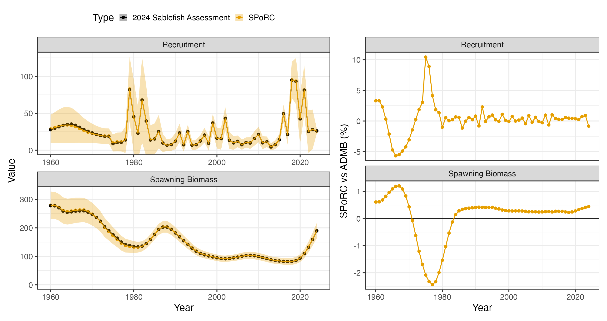

Case Study: Alaska Sablefish (Single Region)
e_single_region_sablefish_case_study.RmdOverview
This case study sets up the 2024 federal Alaska sablefish stock
assessment in SPoRC and compares it against the operational
ADMB model (tem.tpl). Unlike the eastern Bering Sea
pollock case study, which is an exact bridge, this one is a
close bridge: the population dynamics and most likelihood
components correspond one to one, but a handful of conventions in
tem.tpl have no counterpart in SPoRC and are
deliberately not reproduced. Those are enumerated in Where the two models differ, and
they are the reason the two trajectories are close rather than
identical.
The 2024 assessment treats sablefish on an Alaska-wide scale, from the Bering Sea to the Eastern Gulf of Alaska, as a panmictic single-region model:
| Dimension | Value |
|---|---|
| Regions | 1 (panmictic, Bering Sea through Eastern Gulf of Alaska) |
| Years | 1960–2024 |
| Ages | 2–31 (30 age classes, plus group at 31) |
| Sexes | 2 (female, male) |
| Fishery fleets | 2 (fixed gear, trawl) |
| Survey fleets | 3 (domestic longline, domestic trawl, cooperative Japanese longline) |
Because the model is single region and single population, the , and subscripts of the model equations all collapse to one and are dropped from the notation below. The sex subscript is retained, since sablefish is sex structured.
Everything the case study needs ships with the package in
sgl_rg_sable_data. The companion script that produced the
figures below is
dev/make_sporc_obj_figs/make_sgl_rg_sablefish_bridge_figs.R,
and the data container itself is built by
dev/make_sporc_obj_figs/make_sgl_rg_sabie_data_object.R.
Model dimensions
Setup_Mod_Dim builds the input list that every
subsequent helper updates: a data list, a parameter list, and a mapping
list. Note that years and ages are passed as indices rather
than calendar values here, which is why the year vector runs
1:65 rather than 1960:2024.
input_list <- Setup_Mod_Dim(
years = 1:length(dat$years), # 1960-2024
ages = 1:length(dat$ages), # ages 2-31
lens = seq(41, 99, 2), # length bins
n_regions = 1,
n_sexes = dat$n_sexes, # 1 = female, 2 = male
n_fish_fleets = dat$n_fish_fleets, # 1 = fixed gear, 2 = trawl
n_srv_fleets = dat$n_srv_fleets,
n_pop = dat$n_pop,
verbose = FALSE
)Recruitment
Sablefish assumes no stock recruit relationship. Recruitment arises about a mean parameter with lognormal annual deviations, split evenly between the sexes:
Two features of this expression carry most of the setup. The first is , which is not constant: the assessment uses an early period value fixed at and a late period value that switches on in 1976,
which is sigmaR_switch together with
sigmaR_spec = "fix_early_est_late". The late value is
estimated here to follow the assessment, though in practice it is weakly
informed and fixing it is the more defensible choice.
The second is , the Methot and Taylor (2011) bias correction ramp. It rises from zero over an early window, sits at its maximum through the data-rich period, and descends again as recent cohorts become poorly observed:
The four breakpoints are supplied through bias_year.
These are indexed in deviation-index space, not calendar
years. Passing calendar years leaves every range empty and
silently gives
throughout, which removes the bias correction without any warning.
Initial age structure is a geometric series
(init_age_strc = 1) depleted by a historical fishing
mortality:
with the plus group accumulated as a closed geometric sum. The 2024
assessment builds its historical rate as
hist_hal_prop * exp(log_avg_F_fish1), a fixed proportion of
the fixed-gear mean fishing mortality, which is exactly
init_F_form = "prop" with
init_F_spec = "fix":
The "prop" form matters: because
moves with
,
a single parameter both depletes the initial age structure and scales
the F series. That is the assessment’s own construction, so it is
reproduced here, but "abs" is the better choice when a
model’s historical F is conceptually independent of the mean F of the
modelled period.
input_list <- Setup_Mod_Rec(
input_list = input_list,
rec_model = "mean_rec",
do_rec_bias_ramp = 1,
# bias_year is in DEV-INDEX space, not calendar years. The four breakpoints
# are the start of the ascending limb, the start of full correction, the start
# of the descending limb, and the last estimated deviation.
bias_year = c(length(1960:1979),
length(1960:1989),
(length(1960:2023) - 5),
length(1960:2024) - 2) + 1,
sigmaR_switch = as.integer(length(1960:1975)),
ln_sigmaR = array(log(c(0.4, 1.2)), dim = c(2, input_list$data$n_pop, input_list$data$n_regions)),
sigmaR_spec = "fix_early_est_late",
dont_est_recdev_last = 1,
init_age_strc = 1,
# hist_hal_F is a fixed proportion of the fixed-gear mean F in tem.tpl
init_F_form = "prop",
init_F_spec = "fix",
init_F_par = array(stats::qlogis(0.1), dim = c(input_list$data$n_regions,
input_list$data$n_seas,
input_list$data$n_fish_fleets))
)Biological dynamics
Natural mortality is sex specific and fixed. The 2024 assessment
estimates it under a lognormal prior, with males carrying an offset
from the female value, but that offset has no direct counterpart in
SPoRC, so both values are fixed at the assessment’s
estimates instead:
Spawning biomass is female only, evaluated at the spawning point within the year:
Composition data are fit as both ages and lengths, so a size-age transition matrix converts numbers at age to numbers at length, and an ageing error matrix smears the expected age compositions before they reach the likelihood.
fixed_natmort <- array(0, dim = c(input_list$data$n_pop,
input_list$data$n_regions,
n_yrs, n_ages, input_list$data$n_sexes))
fixed_natmort[,,,,1] <- 0.1134156 # female M
fixed_natmort[,,,,2] <- 0.1052175 # male M
input_list <- Setup_Mod_Biologicals(
input_list = input_list,
WAA = dat$WAA,
MatAA = dat$MatAA,
AgeingError = as.matrix(dat$age_error),
SizeAgeTrans = dat$SizeAgeTrans,
Use_M_prior = 0,
fit_lengths = 1,
M_spec = "fix",
Fixed_natmort = fixed_natmort
)Movement and tagging
The model is panmictic, so movement is an identity matrix and no tagging data are used. Both still have to be declared.
input_list <- Setup_Mod_Movement(
input_list = input_list,
use_fixed_movement = 1,
Fixed_Movement = NA,
do_recruits_move = 0
)
input_list <- Setup_Mod_Tagging(
input_list = input_list,
use_conv_fish_tagging = rep(0, input_list$data$n_fish_fleets)
)Catch and fishing mortality
Fishing mortality is a mean rate with annual deviations, and catch is fit lognormally:
The 2024 assessment writes both its catch and its F penalty as
unweighted sums of squares,
wt_ssqcatch * norm2(log(obs) - log(pred)) and
wt_fmort_reg * norm2(log_F_devs). Setting
makes
,
so SPoRC’s Gaussian form collapses to exactly that sum of
squares and the assessment’s weights carry over unchanged as
Wt_Catch = 50 and Wt_F = 0.1.
input_list <- Setup_Mod_Catch_and_F(
input_list = input_list,
ObsCatch = dat$ObsCatch,
UseCatch = dat$UseCatch,
Use_F_pen = 1,
sigmaC_spec = 'fix',
sigmaF_spec = "fix",
# sigma = 1/sqrt(2) makes 1/(2 sigma^2) = 1, so the Gaussian reduces to the
# assessment's unweighted norm2 and its lambdas transfer directly.
ln_sigmaC = array(log(sqrt(1/2)), dim = c(input_list$data$n_regions, n_yrs,
input_list$data$n_seas,
input_list$data$n_fish_fleets)),
ln_sigmaF = array(log(sqrt(1/2)), dim = c(input_list$data$n_regions,
input_list$data$n_seas,
input_list$data$n_fish_fleets))
)Fishery index and compositions
Indices are fit lognormally. The 2024 assessment divides by the coefficient of variation rather than the standard error,
which is why the standard errors are passed as
ObsFishIdx_SE / ObsFishIdx. Passing the raw standard errors
instead would weight the index by a factor of
too many and effectively remove it from the fit.
Compositions are multinomial. Sablefish is sex structured but its
age compositions are not sex specific, so fishery ages are
aggregated across sexes (agg), meaning the expected
proportions are summed over sexes before being compared to the
observations. Length compositions are sex specific and are fit
as spltRspltS, which normalises each sex to sum to one
separately, so no implicit sex ratio is inferred from them.
Only the fixed-gear fleet has an index and age compositions; both fleets have length compositions.
input_list <- Setup_Mod_FishIdx_and_Comps(
input_list = input_list,
ObsFishIdx = dat$ObsFishIdx,
# tem.tpl divides by the CV, not the SE
ObsFishIdx_SE = dat$ObsFishIdx_SE / dat$ObsFishIdx,
UseFishIdx = dat$UseFishIdx,
ObsFishAgeComps = dat$ObsFishAgeComps,
UseFishAgeComps = dat$UseFishAgeComps,
ISS_FishAgeComps = dat$ISS_FishAgeComps,
ObsFishLenComps = dat$ObsFishLenComps,
UseFishLenComps = dat$UseFishLenComps,
ISS_FishLenComps = dat$ISS_FishLenComps,
fish_idx_type = c("biom", "none"),
FishAgeComps_LikeType = c("Multinomial", "none"),
FishLenComps_LikeType = c("Multinomial", "Multinomial"),
# ages aggregate over sexes; lengths are split by sex
FishAgeComps_Type = c("agg_Year_1-terminal_Fleet_1",
"none_Year_1-terminal_Fleet_2"),
FishLenComps_Type = c("spltRspltS_Year_1-terminal_Fleet_1",
"spltRspltS_Year_1-terminal_Fleet_2")
)Survey indices and compositions
The three survey fleets are the domestic longline survey (abundance),
the domestic trawl survey (biomass), and the cooperative Japanese
longline survey (abundance). Age compositions are available for the two
longline surveys and aggregate over sexes; length compositions are
available for all three and split by sex. Surveys are timed halfway
through the year, matching tem.tpl’s use of mid-year
survival
in its predicted indices:
input_list <- Setup_Mod_SrvIdx_and_Comps(
input_list = input_list,
ObsSrvIdx = dat$ObsSrvIdx,
ObsSrvIdx_SE = dat$ObsSrvIdx_SE / dat$ObsSrvIdx,
UseSrvIdx = dat$UseSrvIdx,
ObsSrvAgeComps = dat$ObsSrvAgeComps,
ISS_SrvAgeComps = dat$ISS_SrvAgeComps,
UseSrvAgeComps = dat$UseSrvAgeComps,
ObsSrvLenComps = dat$ObsSrvLenComps,
UseSrvLenComps = dat$UseSrvLenComps,
ISS_SrvLenComps = dat$ISS_SrvLenComps,
srv_idx_type = c("abd", "biom", "abd"),
SrvAgeComps_LikeType = c("Multinomial", "none", "Multinomial"),
SrvLenComps_LikeType = c("Multinomial", "Multinomial", "Multinomial"),
SrvAgeComps_Type = c("agg_Year_1-terminal_Fleet_1",
"none_Year_1-terminal_Fleet_2",
"agg_Year_1-terminal_Fleet_3"),
SrvLenComps_Type = c("spltRspltS_Year_1-terminal_Fleet_1",
"spltRspltS_Year_1-terminal_Fleet_2",
"spltRspltS_Year_1-terminal_Fleet_3")
)Fishery selectivity and catchability
The fixed-gear fleet is logistic, parameterised by the age at 50% selection and a slope:
and carries three time blocks, 1960–1994, 1995–2015, and 2016–2024, reflecting the shift from the pre-IFQ fishery through the IFQ era. Catchability is blocked on the same boundaries.
The trawl fleet is dome shaped, using the reparameterised gamma form in which is the age at maximum selection and controls the steepness of the descending limb:
Parameter sharing across sexes and blocks stabilises the fit and
cannot be expressed through the _spec arguments, so the map
is set by hand afterwards. The first fixed-gear block shares its slope
between sexes; the trawl fleet shares parameters across all blocks.
input_list <- Setup_Mod_Fishsel_and_Q(
input_list = input_list,
cont_tv_fish_sel = c("none_Fleet_1", "none_Fleet_2"),
fish_sel_blocks = c("Block_1_Year_1-35_Fleet_1",
"Block_2_Year_36-56_Fleet_1",
"Block_3_Year_57-terminal_Fleet_1",
"none_Fleet_2"),
fish_sel_model = c("logist1_Fleet_1", "gamma_Fleet_2"),
fish_q_blocks = c("Block_1_Year_1-35_Fleet_1",
"Block_2_Year_36-56_Fleet_1",
"Block_3_Year_57-terminal_Fleet_1",
"none_Fleet_2"),
fish_fixed_sel_pars_spec = c("est_all", "est_all"),
fish_q_spec = c("est_all", "fix")
)
# share the slope across sexes in the early fixed-gear block
input_list$map$fish_fixed_sel_pars <- factor(c(1:7, 2, 8:11, rep(12:13, 3), rep(c(14, 13), 3)))Survey selectivity and catchability
The domestic longline survey is logistic with two time blocks, split at 2016. The trawl survey uses a power function, a single-parameter descending form,
and the cooperative Japanese longline survey is logistic with its parameters fixed at the assessment’s values, since it ended in 1994 and is only weakly informed by the remaining data. Its slope parameters are shared with the domestic longline survey.
input_list <- Setup_Mod_Srvsel_and_Q(
input_list = input_list,
cont_tv_srv_sel = c("none_Fleet_1", "none_Fleet_2", "none_Fleet_3"),
srv_sel_blocks = c("Block_1_Year_1-56_Fleet_1",
"Block_2_Year_57-terminal_Fleet_1",
"none_Fleet_2",
"none_Fleet_3"),
srv_sel_model = c("logist1_Fleet_1", "exponential_Fleet_2", "logist1_Fleet_3"),
srv_q_blocks = c("none_Fleet_1", "none_Fleet_2", "none_Fleet_3"),
srv_fixed_sel_pars_spec = c("est_all", "est_all", "est_all"),
srv_q_spec = c("est_all", "est_all", "est_all"),
# tem.tpl predicts survey indices from mid-year survival
t_srv = array(0.5, dim = c(input_list$data$n_regions,
input_list$data$n_seas,
input_list$data$n_srv_fleets))
)
# Longline survey slopes (indices 2 and 5) are shared across time blocks and
# with the cooperative Japanese survey, which estimates nothing of its own. The
# trawl survey's power function has a single parameter per sex (indices 7, 8).
input_list$map$srv_fixed_sel_pars <-
factor(c(1:3, 2, 4:6, 5, rep(7, 4),
rep(8, 4), rep(c(NA, 2), 2), rep(c(NA, 5), 2)))
# Cooperative Japanese survey logistic parameters, held at the 2024 values
input_list$par$srv_fixed_sel_pars[1,,,1,3] <- c(0.980660760456, 0.9295241)
input_list$par$srv_fixed_sel_pars[1,,,2,3] <- c(1.22224502478, 0.8821623)Weighting
Data sources carry a weight that multiplies the whole component likelihood, on top of the observed standard errors and input sample sizes already supplied. For compositions these come from Francis reweighting; the values below are the 2024 assessment’s converged weights.
dim_comps <- function(n_fleets) {
array(NA, dim = c(input_list$data$n_regions, n_yrs, input_list$data$n_seas,
input_list$data$n_sexes, n_fleets))
}
Wt_FishAgeComps <- dim_comps(input_list$data$n_fish_fleets)
Wt_FishAgeComps[1,,,1,1] <- 0.826107286513784 # fixed gear ages
Wt_FishLenComps <- dim_comps(input_list$data$n_fish_fleets)
Wt_FishLenComps[1,,,1,1] <- 4.1837057381917 # fixed gear lengths, female
Wt_FishLenComps[1,,,2,1] <- 4.26969350917589 # fixed gear lengths, male
Wt_FishLenComps[1,,,1,2] <- 0.316485920691651 # trawl lengths, female
Wt_FishLenComps[1,,,2,2] <- 0.229396580680981 # trawl lengths, male
Wt_SrvAgeComps <- dim_comps(input_list$data$n_srv_fleets)
Wt_SrvAgeComps[1,,,1,1] <- 3.79224544725927 # domestic longline ages
Wt_SrvAgeComps[1,,,1,3] <- 1.31681114024037 # cooperative Japanese ages
Wt_SrvLenComps <- dim_comps(input_list$data$n_srv_fleets)
Wt_SrvLenComps[1,,,1,1] <- 1.43792019016567 # domestic longline, female
Wt_SrvLenComps[1,,,2,1] <- 1.07053763450712 # domestic longline, male
Wt_SrvLenComps[1,,,1,2] <- 0.670883273592302 # domestic trawl, female
Wt_SrvLenComps[1,,,2,2] <- 0.465207132450763 # domestic trawl, male
Wt_SrvLenComps[1,,,1,3] <- 1.27772810174693 # cooperative Japanese, female
Wt_SrvLenComps[1,,,2,3] <- 0.857519546948587 # cooperative Japanese, male
input_list <- Setup_Mod_Weighting(
input_list = input_list,
Wt_Catch = 50,
Wt_FishIdx = 0.448,
Wt_SrvIdx = 0.448,
Wt_Rec = 1.5,
Wt_F = 0.1,
Wt_Tagging = 0,
Wt_FishAgeComps = Wt_FishAgeComps,
Wt_FishLenComps = Wt_FishLenComps,
Wt_SrvAgeComps = Wt_SrvAgeComps,
Wt_SrvLenComps = Wt_SrvLenComps
)Fitting
fit_model extracts the three lists and calls
MakeADFun internally. The newton_loops
argument takes additional Newton steps using the Hessian and gradient
after the main optimizer converges, which serves as a convergence check
as well as a refinement.
data <- input_list$data
parameters <- input_list$par
mapping <- input_list$map
sabie_rtmb_model <- fit_model(data, parameters, mapping,
random = NULL, newton_loops = 3, silent = TRUE)
sabie_rtmb_model$sd_rep <- RTMB::sdreport(sabie_rtmb_model)Comparison against the 2024 assessment
Because this is a single-population, single-region model,
SSB and Rec are dimensioned
and coerce to a vector directly.
ts_df <- rbind(
data.frame(Par = "Spawning Biomass", Year = 1960:2024,
RTMB = as.vector(sabie_rtmb_model$rep$SSB),
ADMB = dat$admb_spbiom),
data.frame(Par = "Recruitment", Year = 1960:2024,
RTMB = as.vector(sabie_rtmb_model$rep$Rec),
ADMB = dat$admb_recr)
)
ts_df$pct_diff <- 100 * (ts_df$RTMB - ts_df$ADMB) / ts_df$ADMB| Quantity | Median difference | Maximum difference |
|---|---|---|
| Spawning biomass | % | % |
| Recruitment | % | % |
The joint negative log likelihood converges to with a maximum absolute gradient of . The largest recruitment differences sit in individual strong year classes, where a small shift in a deviation moves that single year without moving the trajectory; spawning biomass, which integrates over ages, stays within percent everywhere.

Where the two models differ
The 2024 assessment estimates a single
under a lognormal prior and adds a male offset
,
optionally with annual and age deviations. SPoRC
parameterises sex-specific natural mortality directly rather than as an
offset, so an exact match to the prior structure is not available. Both
values are therefore fixed at the assessment’s estimates, which removes
from the comparison entirely rather than leaving it as an uncontrolled
difference.
References
Francis, R.I.C.C. 2011. Data weighting in statistical fisheries stock assessment models. Canadian Journal of Fisheries and Aquatic Sciences 68: 1124–1138.
Methot, R.D., and Taylor, I.G. 2011. Adjusting for bias due to variability of estimated recruitments in fishery assessment models. Canadian Journal of Fisheries and Aquatic Sciences 68: 1744–1760.